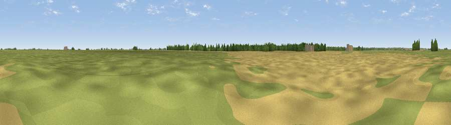

Whittlesey Mere basin, Holme Fen
#45680 in England · top 91% of its area beats it · near HolmeThe view, rendered

A 360° render of this exact spot computed from the terrain model, tree cover and land cover — summer colours, afternoon light, calibrated against photographs of famous viewpoints. Real trees, hedges and buildings will differ in detail.
The panorama
Grey silhouette: terrain skyline in each direction (720 bearings, Earth curvature and refraction included). Dashed green: skyline with trees (+15 m) and buildings (+8 m) as obstacles. Blue strip: how far the ground is visible on each bearing.
Where the view opens
Wedge length = distance to the farthest visible ground on that bearing (vegetation-aware). Rings at 10, 25 and 50 km.
What fills the view
49% grassland · 45% cropland · 4% woodland · 1% built-up
Angular shares of the visible panorama (visual magnitude), not map area. Landscape diversity 0.40 (0–1 Shannon).
Key numbers
More beautiful places nearby
The staircase of upgrades: each row has a higher view potential than everything closer. Driving times are estimates from straight-line distance, calibrated against real road routing — check an actual route before setting out.
| Place | Direction | Drive | Score |
|---|---|---|---|
| Northern Reedbeds Hide | S · 4 km | ~10 min | 28.7 |
| Viewpoint near Sawtry | SW · 9 km | ~17 min | 38.0 |
| Viewpoint near Chesterton | WNW · 11 km | ~21 min | 43.0 |
| Viewpoint near Duddington | WNW · 24 km | ~39 min | 43.8 |
| Viewpoint near Toft | NNW · 31 km | ~48 min | 49.0 |
| Viewpoint near Harlton | SSE · 41 km | ~61 min | 49.6 |
| Viewpoint near Stapleford | SE · 45 km | ~65 min | 54.8 |
| Whatborough Hill | WNW · 48 km | ~69 min | 57.1 |
52.49000, -0.20000 · source: verification · position refined by local search. Computed location — check access rights before visiting.